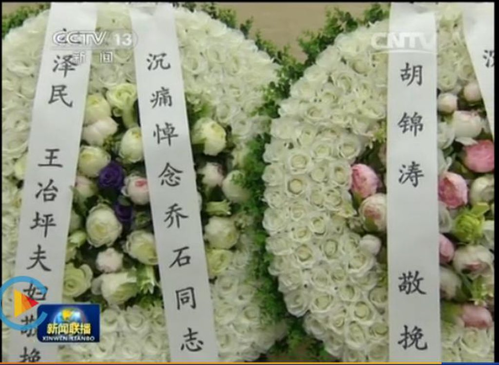

昨天，汪东兴的遗体告别仪式在八宝山革命公墓举行，和今 年辞世的同曾为正国级领导人的乔石、万里和尉健行不一样，昨 晚新闻联播没有播出汪东兴的遗体告别仪式画面，只有遗照加简单口播新闻，时长 1 分 18 秒，而前三位不仅占据了新闻联播头条，而且时长都为 4 分 35 秒左右。
这样处理并不突兀，在先前的讣告中就能发现，汪的表述里是「曾担任党的重要领导职务的」，可能未来胡启立也就是这样 的标准，所以长者没有外地送花圈并不奇怪。汪去世后十一届政 治局常委全部团聚，而在此之前，第十二届常委早已全部团圆。 也就是说，如今常委老人们，只有十三到十八届的跨度了。
「云花圈」
长者今年的三次外地送花圈也是花样虐狗，在万里和乔石的 葬礼上，这外地送来的花圈都写着长者夫妇二人的名字，而旁边 的胡一如既往的严谨，刘永清的名字自始自终没有出现。

续命大赛
回归正题，我们来厘清续命大赛中长者的对手还有那些，首先是续命大赛的门槛，长者参加的必定的是高端组，传统的党和 国家领导人，以中共中央总书记为首，到全国政协副主席为止， 一届就有六七十号人。所以门槛得定为曾担任过党、国家和军队 正职领导职务（包括中共中央总书记、国家主席、全国人大常委 会委员长、国务院总理、全国政协主席、中央军委主席以及政治 局常委）的老同志，简单一点说就是类似于今年的乔石、万里、 尉健行这样能让长者外地送花圈的就是级别门槛，就是参赛门槛。
而且今年 7 月张劲夫去世也去除了续命大赛一个设计门槛 难题，张劲夫另外一个身份是最后一位中顾委常委，他的去世象 征中顾委完全退出历史舞台。中顾委这个存在了 1982 年-1992 年十年的组织级别曾是个模糊的问题，按当时的规定，中顾委副 主任和常委级别相当于中央政治局委员，排名位列中央政治局委 员们之后；而先后担任中顾委主任的邓小平、陈云则同时又是政治局常委。
这样，按正国级领导职务来限定的元老们健在的还有 17 位， 他们分别是（按年龄大小排）：
- 宋平（1917 年）
- 江泽民（1926 年）
- 李鹏（1928 年）
- 胡启立（1929 年）
- 李瑞环（1934 年）
- 朱镕基（1928 年）
- 李岚清（1932 年）
- 罗干（1935 年）
- 吴官正（1938 年）
- 曾庆红（1939 年）
- 贾庆林（1940 年）
- 吴邦国（1941 年）
- 胡锦涛（1942 年）
- 温家宝（1942 年）
- 周永康（1942 年）
- 贺国强（1943 年）
- 李长春（1944 年）
解决了职级门槛，其次就是年龄，按 2004 年长者卸任军委 主席，实现全退正式进入续命模式的年纪来算，即 78 岁，刚退休的十七届政治局常委有的才 70 出头怎么能就开始续命了呢。
以参赛门槛年龄 78 岁算，即 1937 年出生之前的元老有资格参加，曾担任正国级而又年龄符合要求的参赛选手一次为：宋 平、江泽民、李鹏、胡启立、李瑞环、朱镕基、李岚清、罗干等 8 名选手。而在就在半年前，第一方阵里排在江前面还有万里和 乔石，半年后，江已经从第四名跃居到第二名。
成绩的取得既离不开长者自身的保养和锻炼，更离不开广大粉丝的一秒一秒的鼎力续持。在今年的 7 月 1 日，广大粉丝不仅 将世界时间多出的一秒都献给了这位长者，更通过不断点击鼠标 和回答问题分秒必续。
全球 3000 万蛤丝，每人每天续一秒的话，就是 8333 小时， 差不多是一年时间，日续一秒，功不唐捐。